Tier III Tanks
The Best Performing Tanks
Relative WR
The graph shows the tanks with the highest Relative WR. That is the average of players’ WR in a tank compared to their average WR at the tier (in all same tier tanks). Relative WR is a measure of the performance/strength of the tank.
- All the statistics are about battles fought during the update 7.3 only.
- The impact of “Stock-grind battles” is reduced based on tier-specific requirement for total battles at the end of the update. Only players with more than 0-152 (depending on the tier) battles in a tank in the end of the update are included to eliminate the impact of the first battles in the tank (with sub-100% crew / modules).
- The players need to have 10-20 battles in a tank and 20-40 battles at the tier during the update.
- Average WR is the players’s average WR in the tank
- Player WR at Tier is the average WR of the players of the tank at the tier. Since different tiers have different difficulty, it is more meaningful to compare players’ performance in the same tier tanks.
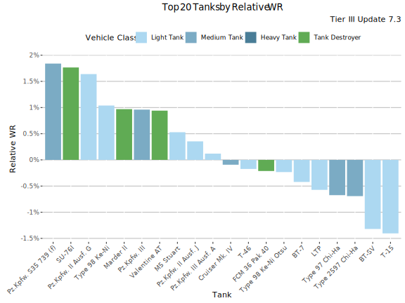
Highest Relative WR - Table
| Tank | Relative WR | Average WR | Player WR at Tier | Players | Battles/Player | Vehicle Class | Tank type |
|---|---|---|---|---|---|---|---|
| SU-76I | 1.74% | 58.2% | 56.4% | 711 | 70 | Tank Destroyer | Premium |
| Pz.Kpfw. S35 739 (f) | 1.65% | 56.1% | 54.5% | 676 | 85 | Medium Tank | Premium |
| Pz.Kpfw. II Ausf. G | 1.41% | 61.4% | 60% | 406 | 77 | Light Tank | Premium |
| Pz.Kpfw. III | 1.03% | 55.3% | 54.3% | 6 475 | 67 | Medium Tank | Researchable |
| Marder II | 1.01% | 56.4% | 55.4% | 504 | 102 | Tank Destroyer | Premium |
| M5 Stuart | 0.51% | 55.1% | 54.6% | 5 473 | 75 | Light Tank | Researchable |
| Pz.Kpfw. III Ausf. A | 0.11% | 53.3% | 53.2% | 2 474 | 71 | Light Tank | Premium |
| Cruiser Mk. IV | -0.18% | 52.5% | 52.7% | 4 106 | 64 | Medium Tank | Researchable |
| T-46 | -0.19% | 55.4% | 55.6% | 420 | 154 | Light Tank | Premium |
| BT-7 | -0.4% | 51.9% | 52.3% | 3 045 | 57 | Light Tank | Researchable |
| Type 97 Chi-Ha | -0.56% | 50.1% | 50.7% | 662 | 39 | Medium Tank | Researchable |
| Type 2597 Chi-Ha | -0.8% | 50% | 50.8% | 474 | 40 | Medium Tank | Researchable |
| BT-SV | -1.33% | 49.3% | 50.7% | 1 271 | 47 | Light Tank | Premium |
| 14TP | -1.65% | 48.8% | 50.4% | 2 326 | 44 | Light Tank | Researchable |
| BT-7 artillery | -2.01% | 49.3% | 51.3% | 427 | 147 | Light Tank | Premium |
| D2 | -2.75% | 47.1% | 49.8% | 1 186 | 36 | Heavy Tank | Researchable |
Highest Average WR
This graph shows the tanks with the highest average WR at tier III during update 7.3. Player WR denotes the tank’s players’ average WR across all the tanks during the update. Only tanks with more than 400 players are listed. This may filter out few upcoming tanks that are being tested.
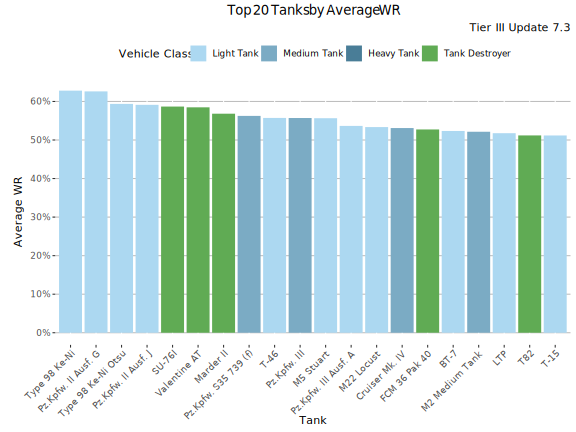
Highest Average WR - Table
Average WR denotes average WR in a tank across all the players during the update. Player WR denotes the tank’s players’ average WR across all the tanks during the update.
| Tank | Average WR | Player WR at Tier | Players | Battles/Player | Vehicle Class | Tank type |
|---|---|---|---|---|---|---|
| Type 98 Ke-Ni | 62.6% | 61.3% | 457 | 60 | Light Tank | Premium |
| Pz.Kpfw. II Ausf. G | 61.8% | 59.8% | 480 | 71 | Light Tank | Premium |
| SU-76I | 58.6% | 56.6% | 846 | 68 | Tank Destroyer | Premium |
| Marder II | 56.5% | 55.3% | 602 | 97 | Tank Destroyer | Premium |
| Pz.Kpfw. S35 739 (f) | 56.3% | 54.6% | 814 | 109 | Medium Tank | Premium |
| Pz.Kpfw. III | 55.8% | 54.7% | 8 993 | 66 | Medium Tank | Researchable |
| M5 Stuart | 55.5% | 54.8% | 7 362 | 71 | Light Tank | Researchable |
| T-46 | 55.2% | 55.3% | 534 | 150 | Light Tank | Premium |
| Pz.Kpfw. III Ausf. A | 53.6% | 53.3% | 3 406 | 68 | Light Tank | Premium |
| Cruiser Mk. IV | 52.8% | 52.7% | 5 366 | 62 | Medium Tank | Researchable |
| BT-7 | 52.7% | 52.6% | 4 267 | 61 | Light Tank | Researchable |
| T-15 | 50.8% | 52% | 417 | 65 | Light Tank | Premium |
| Type 97 Chi-Ha | 50.2% | 50.7% | 818 | 41 | Medium Tank | Researchable |
| Type 2597 Chi-Ha | 50.1% | 51% | 597 | 40 | Medium Tank | Researchable |
| BT-SV | 49.5% | 50.6% | 1 707 | 47 | Light Tank | Premium |
| BT-7 artillery | 49.4% | 51.6% | 582 | 136 | Light Tank | Premium |
| 14TP | 48.8% | 50.3% | 3 381 | 43 | Light Tank | Researchable |
| D2 | 47.3% | 49.9% | 1 459 | 35 | Heavy Tank | Researchable |
Highest Average Damage
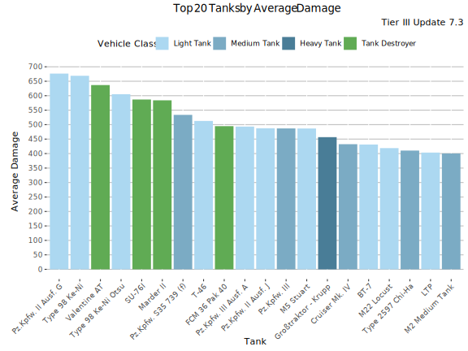
Highest Average Damage - Table
| Tank | Average Damage | Average WR | Player WR at Tier | Players | Battles/Player | Vehicle Class | Tank type |
|---|---|---|---|---|---|---|---|
| Type 98 Ke-Ni | 661 | 62.6% | 61.3% | 457 | 60 | Light Tank | Premium |
| Pz.Kpfw. II Ausf. G | 655 | 61.8% | 59.8% | 480 | 71 | Light Tank | Premium |
| SU-76I | 585 | 58.6% | 56.6% | 846 | 68 | Tank Destroyer | Premium |
| Marder II | 560 | 56.5% | 55.3% | 602 | 97 | Tank Destroyer | Premium |
| Pz.Kpfw. S35 739 (f) | 531 | 56.3% | 54.6% | 814 | 109 | Medium Tank | Premium |
| Pz.Kpfw. III | 487 | 55.8% | 54.7% | 8 993 | 66 | Medium Tank | Researchable |
| T-46 | 486 | 55.2% | 55.3% | 534 | 150 | Light Tank | Premium |
| Pz.Kpfw. III Ausf. A | 484 | 53.6% | 53.3% | 3 406 | 68 | Light Tank | Premium |
| M5 Stuart | 479 | 55.5% | 54.8% | 7 362 | 71 | Light Tank | Researchable |
| BT-7 | 429 | 52.7% | 52.6% | 4 267 | 61 | Light Tank | Researchable |
| Cruiser Mk. IV | 422 | 52.8% | 52.7% | 5 366 | 62 | Medium Tank | Researchable |
| Type 2597 Chi-Ha | 394 | 50.1% | 51% | 597 | 40 | Medium Tank | Researchable |
| BT-SV | 377 | 49.5% | 50.6% | 1 707 | 47 | Light Tank | Premium |
| Type 97 Chi-Ha | 370 | 50.2% | 50.7% | 818 | 41 | Medium Tank | Researchable |
| D2 | 359 | 47.3% | 49.9% | 1 459 | 35 | Heavy Tank | Researchable |
| 14TP | 357 | 48.8% | 50.3% | 3 381 | 43 | Light Tank | Researchable |
| T-15 | 341 | 50.8% | 52% | 417 | 65 | Light Tank | Premium |
| BT-7 artillery | 308 | 49.4% | 51.6% | 582 | 136 | Light Tank | Premium |
Highest Average Kills/Battle
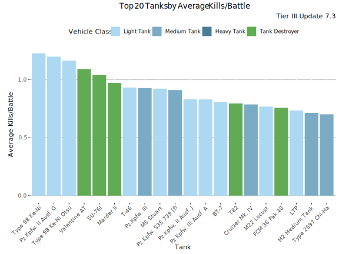
Highest Average Kills/Battle - Table
| Tank | Average Kills/Battle | Average WR | Player WR at Tier | Players | Battles/Player | Vehicle Class | Tank type |
|---|---|---|---|---|---|---|---|
| Type 98 Ke-Ni | 1.22 | 62.6% | 61.3% | 457 | 60 | Light Tank | Premium |
| Pz.Kpfw. II Ausf. G | 1.17 | 61.8% | 59.8% | 480 | 71 | Light Tank | Premium |
| SU-76I | 1.04 | 58.6% | 56.6% | 846 | 68 | Tank Destroyer | Premium |
| Marder II | 0.95 | 56.5% | 55.3% | 602 | 97 | Tank Destroyer | Premium |
| Pz.Kpfw. III | 0.94 | 55.8% | 54.7% | 8 993 | 66 | Medium Tank | Researchable |
| Pz.Kpfw. S35 739 (f) | 0.93 | 56.3% | 54.6% | 814 | 109 | Medium Tank | Premium |
| M5 Stuart | 0.91 | 55.5% | 54.8% | 7 362 | 71 | Light Tank | Researchable |
| T-46 | 0.90 | 55.2% | 55.3% | 534 | 150 | Light Tank | Premium |
| Pz.Kpfw. III Ausf. A | 0.82 | 53.6% | 53.3% | 3 406 | 68 | Light Tank | Premium |
| BT-7 | 0.82 | 52.7% | 52.6% | 4 267 | 61 | Light Tank | Researchable |
| Cruiser Mk. IV | 0.78 | 52.8% | 52.7% | 5 366 | 62 | Medium Tank | Researchable |
| Type 2597 Chi-Ha | 0.67 | 50.1% | 51% | 597 | 40 | Medium Tank | Researchable |
| T-15 | 0.65 | 50.8% | 52% | 417 | 65 | Light Tank | Premium |
| Type 97 Chi-Ha | 0.65 | 50.2% | 50.7% | 818 | 41 | Medium Tank | Researchable |
| BT-7 artillery | 0.63 | 49.4% | 51.6% | 582 | 136 | Light Tank | Premium |
| D2 | 0.62 | 47.3% | 49.9% | 1 459 | 35 | Heavy Tank | Researchable |
| 14TP | 0.62 | 48.8% | 50.3% | 3 381 | 43 | Light Tank | Researchable |
| BT-SV | 0.61 | 49.5% | 50.6% | 1 707 | 47 | Light Tank | Premium |
Highest Spot Rate
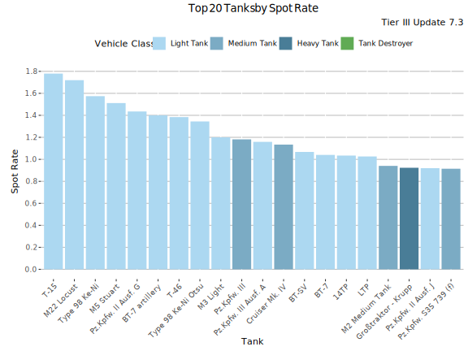
Highest Spot Rate - Table
| Tank | Spot Rate | Average WR | Player WR at Tier | Players | Battles/Player | Vehicle Class | Tank type |
|---|---|---|---|---|---|---|---|
| T-15 | 1.78 | 50.8% | 52% | 417 | 65 | Light Tank | Premium |
| Type 98 Ke-Ni | 1.57 | 62.6% | 61.3% | 457 | 60 | Light Tank | Premium |
| M5 Stuart | 1.49 | 55.5% | 54.8% | 7 362 | 71 | Light Tank | Researchable |
| BT-7 artillery | 1.46 | 49.4% | 51.6% | 582 | 136 | Light Tank | Premium |
| Pz.Kpfw. II Ausf. G | 1.42 | 61.8% | 59.8% | 480 | 71 | Light Tank | Premium |
| T-46 | 1.37 | 55.2% | 55.3% | 534 | 150 | Light Tank | Premium |
| Pz.Kpfw. III | 1.18 | 55.8% | 54.7% | 8 993 | 66 | Medium Tank | Researchable |
| Pz.Kpfw. III Ausf. A | 1.17 | 53.6% | 53.3% | 3 406 | 68 | Light Tank | Premium |
| Cruiser Mk. IV | 1.13 | 52.8% | 52.7% | 5 366 | 62 | Medium Tank | Researchable |
| BT-SV | 1.10 | 49.5% | 50.6% | 1 707 | 47 | Light Tank | Premium |
| BT-7 | 1.04 | 52.7% | 52.6% | 4 267 | 61 | Light Tank | Researchable |
| 14TP | 1.01 | 48.8% | 50.3% | 3 381 | 43 | Light Tank | Researchable |
| Pz.Kpfw. S35 739 (f) | 0.94 | 56.3% | 54.6% | 814 | 109 | Medium Tank | Premium |
| Type 97 Chi-Ha | 0.85 | 50.2% | 50.7% | 818 | 41 | Medium Tank | Researchable |
| Type 2597 Chi-Ha | 0.78 | 50.1% | 51% | 597 | 40 | Medium Tank | Researchable |
| D2 | 0.68 | 47.3% | 49.9% | 1 459 | 35 | Heavy Tank | Researchable |
| SU-76I | 0.65 | 58.6% | 56.6% | 846 | 68 | Tank Destroyer | Premium |
| Marder II | 0.47 | 56.5% | 55.3% | 602 | 97 | Tank Destroyer | Premium |
Highest Hit Rate

Highest Hit Rate - Table
| Tank | Hit Rate | Average WR | Player WR at Tier | Players | Battles/Player | Vehicle Class | Tank type |
|---|---|---|---|---|---|---|---|
| Type 98 Ke-Ni | 80.9% | 62.6% | 61.3% | 457 | 60 | Light Tank | Premium |
| T-15 | 79.5% | 50.8% | 52% | 417 | 65 | Light Tank | Premium |
| Pz.Kpfw. S35 739 (f) | 79% | 56.3% | 54.6% | 814 | 109 | Medium Tank | Premium |
| Pz.Kpfw. III | 77.2% | 55.8% | 54.7% | 8 993 | 66 | Medium Tank | Researchable |
| Pz.Kpfw. III Ausf. A | 76.9% | 53.6% | 53.3% | 3 406 | 68 | Light Tank | Premium |
| SU-76I | 76.4% | 58.6% | 56.6% | 846 | 68 | Tank Destroyer | Premium |
| Type 2597 Chi-Ha | 76.2% | 50.1% | 51% | 597 | 40 | Medium Tank | Researchable |
| BT-SV | 75.9% | 49.5% | 50.6% | 1 707 | 47 | Light Tank | Premium |
| M5 Stuart | 75.8% | 55.5% | 54.8% | 7 362 | 71 | Light Tank | Researchable |
| 14TP | 75.7% | 48.8% | 50.3% | 3 381 | 43 | Light Tank | Researchable |
| BT-7 | 75.7% | 52.7% | 52.6% | 4 267 | 61 | Light Tank | Researchable |
| D2 | 75.3% | 47.3% | 49.9% | 1 459 | 35 | Heavy Tank | Researchable |
| Type 97 Chi-Ha | 75.3% | 50.2% | 50.7% | 818 | 41 | Medium Tank | Researchable |
| Cruiser Mk. IV | 74.5% | 52.8% | 52.7% | 5 366 | 62 | Medium Tank | Researchable |
| Marder II | 74.4% | 56.5% | 55.3% | 602 | 97 | Tank Destroyer | Premium |
| BT-7 artillery | 73.9% | 49.4% | 51.6% | 582 | 136 | Light Tank | Premium |
| T-46 | 73.6% | 55.2% | 55.3% | 534 | 150 | Light Tank | Premium |
| Pz.Kpfw. II Ausf. G | 70.9% | 61.8% | 59.8% | 480 | 71 | Light Tank | Premium |
Most Popular Tanks
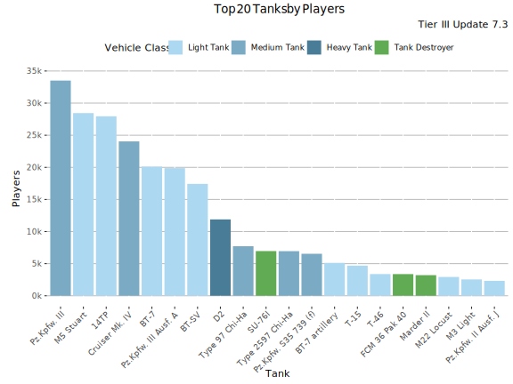
Most played Tanks
This graph shows the most played tanks by number of battles during the update 7.3.
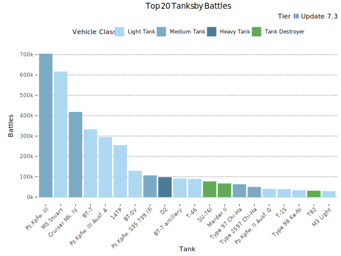
Most Played Tanks - Table
| Tank | Battles | Average WR | Player WR at Tier | Players | Battles/Player | Vehicle Class | Tank type |
|---|---|---|---|---|---|---|---|
| Pz.Kpfw. III | 704 159 | 55.8% | 54.7% | 33 510 | 21 | Medium Tank | Researchable |
| M5 Stuart | 616 737 | 56.4% | 54.7% | 28 444 | 22 | Light Tank | Researchable |
| Cruiser Mk. IV | 418 368 | 54.2% | 53.7% | 24 036 | 17 | Medium Tank | Researchable |
| BT-7 | 332 929 | 54.7% | 53.9% | 20 115 | 17 | Light Tank | Researchable |
| Pz.Kpfw. III Ausf. A | 294 636 | 55.1% | 53.9% | 19 878 | 15 | Light Tank | Premium |
| 14TP | 255 544 | 50.8% | 52.3% | 27 949 | 9 | Light Tank | Researchable |
| BT-SV | 129 982 | 50.8% | 52.4% | 17 424 | 7 | Light Tank | Premium |
| Pz.Kpfw. S35 739 (f) | 106 984 | 60.8% | 54.8% | 6 538 | 16 | Medium Tank | Premium |
| D2 | 97 789 | 49.7% | 52.3% | 11 889 | 8 | Heavy Tank | Researchable |
| BT-7 artillery | 91 839 | 46.9% | 53.6% | 5 121 | 18 | Light Tank | Premium |
| T-46 | 89 674 | 56.4% | 56.5% | 3 377 | 27 | Light Tank | Premium |
| SU-76I | 77 222 | 63.3% | 56.1% | 6 956 | 11 | Tank Destroyer | Premium |
| Marder II | 67 359 | 59.7% | 56.1% | 3 209 | 21 | Tank Destroyer | Premium |
| Type 97 Chi-Ha | 63 459 | 51.4% | 52.6% | 7 715 | 8 | Medium Tank | Researchable |
| Type 2597 Chi-Ha | 50 602 | 53% | 52.4% | 6 945 | 7 | Medium Tank | Researchable |
| Pz.Kpfw. II Ausf. G | 40 967 | 61.7% | 58.5% | 2 287 | 18 | Light Tank | Premium |
| T-15 | 39 947 | 52.4% | 53.7% | 4 691 | 9 | Light Tank | Premium |
| Type 98 Ke-Ni | 33 912 | 63.1% | 59.7% | 1 998 | 17 | Light Tank | Premium |
| T82 | 31 903 | 47.1% | 55.8% | 2 161 | 15 | Tank Destroyer | Premium |
| M3 Light | 29 744 | 50.3% | 52.7% | 2 543 | 12 | Light Tank | Premium |
Lowest Performing Tanks
Lowest Relative WR
The graph shows the tanks with the lowest Relative WR. That is the average of players’ WR in a tank compared to their average WR at the tier (in all same tier tanks). Relative WR is a measure of the performance/strength of the tank.
- All the statistics are about battles fought during the update 7.3 only.
- The impact of “Stock-grind battles” is reduced based on tier-specific requirement for total battles at the end of the update. Only players with more than 0-152 (depending on the tier) battles in a tank in the end of the update are included to eliminate the impact of the first battles in the tank (with sub-100% crew / modules).
- The players need to have 10-20 battles in a tank and 20-40 battles at the tier during the update.
- Average WR is the players’s average WR in the tank
- Player WR at Tier is the average WR of the players of the tank at the tier. Since different tiers have different difficulty, it is more meaningful to compare players’ performance in the same tier tanks.
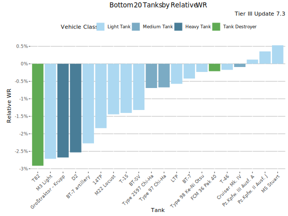
Lowest Relative WR - Table
| Tank | Relative WR | Average WR | Player WR at Tier | Players | Battles/Player | Vehicle Class | Tank type |
|---|---|---|---|---|---|---|---|
| D2 | -2.75% | 47.1% | 49.8% | 1 186 | 36 | Heavy Tank | Researchable |
| BT-7 artillery | -2.01% | 49.3% | 51.3% | 427 | 147 | Light Tank | Premium |
| 14TP | -1.65% | 48.8% | 50.4% | 2 326 | 44 | Light Tank | Researchable |
| BT-SV | -1.33% | 49.3% | 50.7% | 1 271 | 47 | Light Tank | Premium |
| Type 2597 Chi-Ha | -0.8% | 50% | 50.8% | 474 | 40 | Medium Tank | Researchable |
| Type 97 Chi-Ha | -0.56% | 50.1% | 50.7% | 662 | 39 | Medium Tank | Researchable |
| BT-7 | -0.4% | 51.9% | 52.3% | 3 045 | 57 | Light Tank | Researchable |
| T-46 | -0.19% | 55.4% | 55.6% | 420 | 154 | Light Tank | Premium |
| Cruiser Mk. IV | -0.18% | 52.5% | 52.7% | 4 106 | 64 | Medium Tank | Researchable |
| Pz.Kpfw. III Ausf. A | 0.11% | 53.3% | 53.2% | 2 474 | 71 | Light Tank | Premium |
| M5 Stuart | 0.51% | 55.1% | 54.6% | 5 473 | 75 | Light Tank | Researchable |
| Marder II | 1.01% | 56.4% | 55.4% | 504 | 102 | Tank Destroyer | Premium |
| Pz.Kpfw. III | 1.03% | 55.3% | 54.3% | 6 475 | 67 | Medium Tank | Researchable |
| Pz.Kpfw. II Ausf. G | 1.41% | 61.4% | 60% | 406 | 77 | Light Tank | Premium |
| Pz.Kpfw. S35 739 (f) | 1.65% | 56.1% | 54.5% | 676 | 85 | Medium Tank | Premium |
| SU-76I | 1.74% | 58.2% | 56.4% | 711 | 70 | Tank Destroyer | Premium |
Lowest Average WR
This graph shows the tanks with the lowest average WR at tier III during update 7.3. Player WR denotes the tank’s players’ average WR across all the tanks during the update. Only tanks with more than 400 players are listed. This may filter out few upcoming tanks that are being tested.
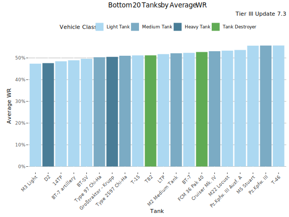
Lowest Average WR - Table
Average WR denotes average WR in a tank across all the players during the update. Player WR denotes the tank’s players’ average WR across all the tanks during the update.
| Tank | Average WR | Player WR at Tier | Players | Battles/Player | Vehicle Class | Tank type |
|---|---|---|---|---|---|---|
| D2 | 47.3% | 49.9% | 1 459 | 35 | Heavy Tank | Researchable |
| 14TP | 48.8% | 50.3% | 3 381 | 43 | Light Tank | Researchable |
| BT-7 artillery | 49.4% | 51.6% | 582 | 136 | Light Tank | Premium |
| BT-SV | 49.5% | 50.6% | 1 707 | 47 | Light Tank | Premium |
| Type 2597 Chi-Ha | 50.1% | 51% | 597 | 40 | Medium Tank | Researchable |
| Type 97 Chi-Ha | 50.2% | 50.7% | 818 | 41 | Medium Tank | Researchable |
| T-15 | 50.8% | 52% | 417 | 65 | Light Tank | Premium |
| BT-7 | 52.7% | 52.6% | 4 267 | 61 | Light Tank | Researchable |
| Cruiser Mk. IV | 52.8% | 52.7% | 5 366 | 62 | Medium Tank | Researchable |
| Pz.Kpfw. III Ausf. A | 53.6% | 53.3% | 3 406 | 68 | Light Tank | Premium |
| T-46 | 55.2% | 55.3% | 534 | 150 | Light Tank | Premium |
| M5 Stuart | 55.5% | 54.8% | 7 362 | 71 | Light Tank | Researchable |
| Pz.Kpfw. III | 55.8% | 54.7% | 8 993 | 66 | Medium Tank | Researchable |
| Pz.Kpfw. S35 739 (f) | 56.3% | 54.6% | 814 | 109 | Medium Tank | Premium |
| Marder II | 56.5% | 55.3% | 602 | 97 | Tank Destroyer | Premium |
| SU-76I | 58.6% | 56.6% | 846 | 68 | Tank Destroyer | Premium |
| Pz.Kpfw. II Ausf. G | 61.8% | 59.8% | 480 | 71 | Light Tank | Premium |
| Type 98 Ke-Ni | 62.6% | 61.3% | 457 | 60 | Light Tank | Premium |
Lowest Average Damage
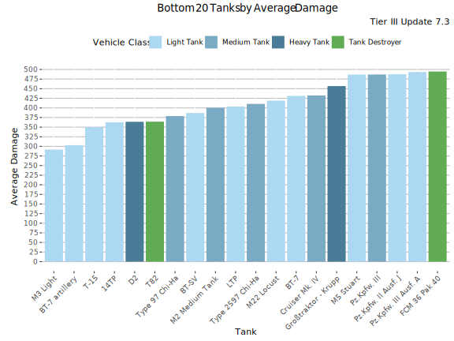
Lowest Average Damage - Table
| Tank | Average Damage | Average WR | Player WR at Tier | Players | Battles/Player | Vehicle Class | Tank type |
|---|---|---|---|---|---|---|---|
| BT-7 artillery | 308 | 49.4% | 51.6% | 582 | 136 | Light Tank | Premium |
| T-15 | 341 | 50.8% | 52% | 417 | 65 | Light Tank | Premium |
| 14TP | 357 | 48.8% | 50.3% | 3 381 | 43 | Light Tank | Researchable |
| D2 | 359 | 47.3% | 49.9% | 1 459 | 35 | Heavy Tank | Researchable |
| Type 97 Chi-Ha | 370 | 50.2% | 50.7% | 818 | 41 | Medium Tank | Researchable |
| BT-SV | 377 | 49.5% | 50.6% | 1 707 | 47 | Light Tank | Premium |
| Type 2597 Chi-Ha | 394 | 50.1% | 51% | 597 | 40 | Medium Tank | Researchable |
| Cruiser Mk. IV | 422 | 52.8% | 52.7% | 5 366 | 62 | Medium Tank | Researchable |
| BT-7 | 429 | 52.7% | 52.6% | 4 267 | 61 | Light Tank | Researchable |
| M5 Stuart | 479 | 55.5% | 54.8% | 7 362 | 71 | Light Tank | Researchable |
| Pz.Kpfw. III Ausf. A | 484 | 53.6% | 53.3% | 3 406 | 68 | Light Tank | Premium |
| T-46 | 486 | 55.2% | 55.3% | 534 | 150 | Light Tank | Premium |
| Pz.Kpfw. III | 487 | 55.8% | 54.7% | 8 993 | 66 | Medium Tank | Researchable |
| Pz.Kpfw. S35 739 (f) | 531 | 56.3% | 54.6% | 814 | 109 | Medium Tank | Premium |
| Marder II | 560 | 56.5% | 55.3% | 602 | 97 | Tank Destroyer | Premium |
| SU-76I | 585 | 58.6% | 56.6% | 846 | 68 | Tank Destroyer | Premium |
| Pz.Kpfw. II Ausf. G | 655 | 61.8% | 59.8% | 480 | 71 | Light Tank | Premium |
| Type 98 Ke-Ni | 661 | 62.6% | 61.3% | 457 | 60 | Light Tank | Premium |
Lowest Average Kills/Battle

Lowest Average Kills/Battle - Table
| Tank | Average Kills/Battle | Average WR | Player WR at Tier | Players | Battles/Player | Vehicle Class | Tank type |
|---|---|---|---|---|---|---|---|
| BT-SV | 0.61 | 49.5% | 50.6% | 1 707 | 47 | Light Tank | Premium |
| 14TP | 0.62 | 48.8% | 50.3% | 3 381 | 43 | Light Tank | Researchable |
| D2 | 0.62 | 47.3% | 49.9% | 1 459 | 35 | Heavy Tank | Researchable |
| BT-7 artillery | 0.63 | 49.4% | 51.6% | 582 | 136 | Light Tank | Premium |
| Type 97 Chi-Ha | 0.65 | 50.2% | 50.7% | 818 | 41 | Medium Tank | Researchable |
| T-15 | 0.65 | 50.8% | 52% | 417 | 65 | Light Tank | Premium |
| Type 2597 Chi-Ha | 0.67 | 50.1% | 51% | 597 | 40 | Medium Tank | Researchable |
| Cruiser Mk. IV | 0.78 | 52.8% | 52.7% | 5 366 | 62 | Medium Tank | Researchable |
| BT-7 | 0.82 | 52.7% | 52.6% | 4 267 | 61 | Light Tank | Researchable |
| Pz.Kpfw. III Ausf. A | 0.82 | 53.6% | 53.3% | 3 406 | 68 | Light Tank | Premium |
| T-46 | 0.90 | 55.2% | 55.3% | 534 | 150 | Light Tank | Premium |
| M5 Stuart | 0.91 | 55.5% | 54.8% | 7 362 | 71 | Light Tank | Researchable |
| Pz.Kpfw. S35 739 (f) | 0.93 | 56.3% | 54.6% | 814 | 109 | Medium Tank | Premium |
| Pz.Kpfw. III | 0.94 | 55.8% | 54.7% | 8 993 | 66 | Medium Tank | Researchable |
| Marder II | 0.95 | 56.5% | 55.3% | 602 | 97 | Tank Destroyer | Premium |
| SU-76I | 1.04 | 58.6% | 56.6% | 846 | 68 | Tank Destroyer | Premium |
| Pz.Kpfw. II Ausf. G | 1.17 | 61.8% | 59.8% | 480 | 71 | Light Tank | Premium |
| Type 98 Ke-Ni | 1.22 | 62.6% | 61.3% | 457 | 60 | Light Tank | Premium |
Lowest Spot Rate
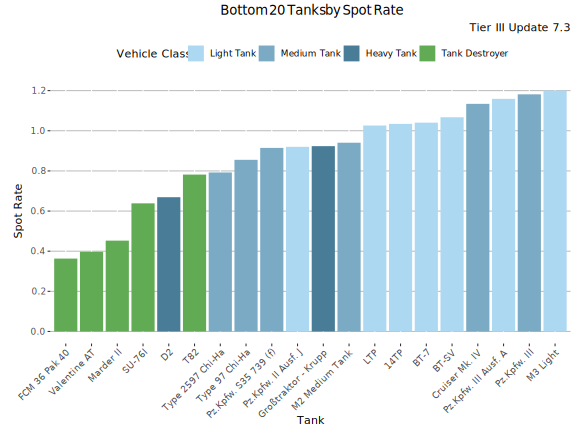
Lowest Spot Rate - Table
| Tank | Spot Rate | Average WR | Player WR at Tier | Players | Battles/Player | Vehicle Class | Tank type |
|---|---|---|---|---|---|---|---|
| Marder II | 0.47 | 56.5% | 55.3% | 602 | 97 | Tank Destroyer | Premium |
| SU-76I | 0.65 | 58.6% | 56.6% | 846 | 68 | Tank Destroyer | Premium |
| D2 | 0.68 | 47.3% | 49.9% | 1 459 | 35 | Heavy Tank | Researchable |
| Type 2597 Chi-Ha | 0.78 | 50.1% | 51% | 597 | 40 | Medium Tank | Researchable |
| Type 97 Chi-Ha | 0.85 | 50.2% | 50.7% | 818 | 41 | Medium Tank | Researchable |
| Pz.Kpfw. S35 739 (f) | 0.94 | 56.3% | 54.6% | 814 | 109 | Medium Tank | Premium |
| 14TP | 1.01 | 48.8% | 50.3% | 3 381 | 43 | Light Tank | Researchable |
| BT-7 | 1.04 | 52.7% | 52.6% | 4 267 | 61 | Light Tank | Researchable |
| BT-SV | 1.10 | 49.5% | 50.6% | 1 707 | 47 | Light Tank | Premium |
| Cruiser Mk. IV | 1.13 | 52.8% | 52.7% | 5 366 | 62 | Medium Tank | Researchable |
| Pz.Kpfw. III Ausf. A | 1.17 | 53.6% | 53.3% | 3 406 | 68 | Light Tank | Premium |
| Pz.Kpfw. III | 1.18 | 55.8% | 54.7% | 8 993 | 66 | Medium Tank | Researchable |
| T-46 | 1.37 | 55.2% | 55.3% | 534 | 150 | Light Tank | Premium |
| Pz.Kpfw. II Ausf. G | 1.42 | 61.8% | 59.8% | 480 | 71 | Light Tank | Premium |
| BT-7 artillery | 1.46 | 49.4% | 51.6% | 582 | 136 | Light Tank | Premium |
| M5 Stuart | 1.49 | 55.5% | 54.8% | 7 362 | 71 | Light Tank | Researchable |
| Type 98 Ke-Ni | 1.57 | 62.6% | 61.3% | 457 | 60 | Light Tank | Premium |
| T-15 | 1.78 | 50.8% | 52% | 417 | 65 | Light Tank | Premium |
Lowest Hit Rate
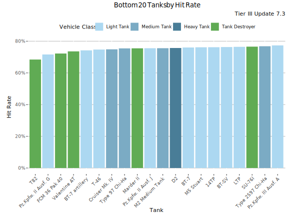
Lowest Hit Rate - Table
| Tank | Hit Rate | Average WR | Player WR at Tier | Players | Battles/Player | Vehicle Class | Tank type |
|---|---|---|---|---|---|---|---|
| Pz.Kpfw. II Ausf. G | 70.9% | 61.8% | 59.8% | 480 | 71 | Light Tank | Premium |
| T-46 | 73.6% | 55.2% | 55.3% | 534 | 150 | Light Tank | Premium |
| BT-7 artillery | 73.9% | 49.4% | 51.6% | 582 | 136 | Light Tank | Premium |
| Marder II | 74.4% | 56.5% | 55.3% | 602 | 97 | Tank Destroyer | Premium |
| Cruiser Mk. IV | 74.5% | 52.8% | 52.7% | 5 366 | 62 | Medium Tank | Researchable |
| Type 97 Chi-Ha | 75.3% | 50.2% | 50.7% | 818 | 41 | Medium Tank | Researchable |
| D2 | 75.3% | 47.3% | 49.9% | 1 459 | 35 | Heavy Tank | Researchable |
| BT-7 | 75.7% | 52.7% | 52.6% | 4 267 | 61 | Light Tank | Researchable |
| 14TP | 75.7% | 48.8% | 50.3% | 3 381 | 43 | Light Tank | Researchable |
| M5 Stuart | 75.8% | 55.5% | 54.8% | 7 362 | 71 | Light Tank | Researchable |
| BT-SV | 75.9% | 49.5% | 50.6% | 1 707 | 47 | Light Tank | Premium |
| Type 2597 Chi-Ha | 76.2% | 50.1% | 51% | 597 | 40 | Medium Tank | Researchable |
| SU-76I | 76.4% | 58.6% | 56.6% | 846 | 68 | Tank Destroyer | Premium |
| Pz.Kpfw. III Ausf. A | 76.9% | 53.6% | 53.3% | 3 406 | 68 | Light Tank | Premium |
| Pz.Kpfw. III | 77.2% | 55.8% | 54.7% | 8 993 | 66 | Medium Tank | Researchable |
| Pz.Kpfw. S35 739 (f) | 79% | 56.3% | 54.6% | 814 | 109 | Medium Tank | Premium |
| T-15 | 79.5% | 50.8% | 52% | 417 | 65 | Light Tank | Premium |
| Type 98 Ke-Ni | 80.9% | 62.6% | 61.3% | 457 | 60 | Light Tank | Premium |
Least popular Tanks
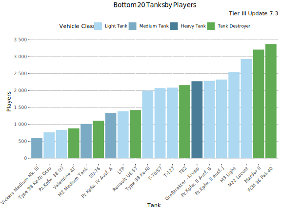
Least played Tanks
This graph shows the most played tanks by number of battles during the update 7.3.
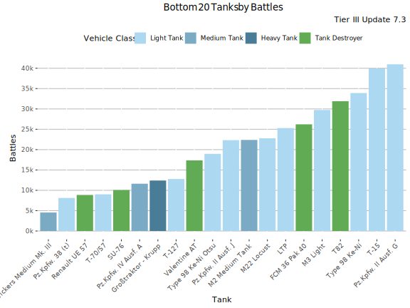
Least Played Tanks - Table
| Tank | Battles | Average WR | Player WR at Tier | Players | Battles/Player | Vehicle Class | Tank type |
|---|---|---|---|---|---|---|---|
| Vickers Medium Mk. III | 4 548 | 55% | 55.9% | 602 | 8 | Medium Tank | Premium |
| Pz.Kpfw. 38 (t) | 8 126 | 55.2% | 54.7% | 838 | 10 | Light Tank | Premium |
| Renault UE 57 | 8 860 | 59% | 57.5% | 1 424 | 6 | Tank Destroyer | Premium |
| T-70/57 | 9 017 | 58.4% | 55.2% | 2 072 | 4 | Light Tank | Premium |
| SU-76 | 10 070 | 56.5% | 55.1% | 1 109 | 9 | Tank Destroyer | Premium |
| Pz.Kpfw. IV Ausf. A | 11 627 | 54.8% | 56% | 1 338 | 9 | Medium Tank | Premium |
| Großtraktor - Krupp | 12 408 | 51.8% | 55.3% | 2 275 | 5 | Heavy Tank | Premium |
| T-127 | 12 786 | 58.4% | 54.6% | 2 085 | 6 | Light Tank | Premium |
| Valentine AT | 17 361 | 61.2% | 57.5% | 883 | 20 | Tank Destroyer | Premium |
| Type 98 Ke-Ni Otsu | 18 967 | 60.6% | 60.2% | 765 | 25 | Light Tank | Premium |
| Pz.Kpfw. II Ausf. J | 22 329 | 59.1% | 56.9% | 2 325 | 10 | Light Tank | Premium |
| M2 Medium Tank | 22 383 | 54.7% | 55.6% | 1 014 | 22 | Medium Tank | Premium |
| M22 Locust | 22 792 | 53.8% | 55% | 2 928 | 8 | Light Tank | Premium |
| LTP | 25 299 | 52.7% | 53.9% | 1 386 | 18 | Light Tank | Premium |
| FCM 36 Pak 40 | 26 216 | 54.8% | 54.3% | 3 372 | 8 | Tank Destroyer | Premium |
| M3 Light | 29 744 | 50.3% | 52.7% | 2 543 | 12 | Light Tank | Premium |
| T82 | 31 903 | 47.1% | 55.8% | 2 161 | 15 | Tank Destroyer | Premium |
| Type 98 Ke-Ni | 33 912 | 63.1% | 59.7% | 1 998 | 17 | Light Tank | Premium |
| T-15 | 39 947 | 52.4% | 53.7% | 4 691 | 9 | Light Tank | Premium |
| Pz.Kpfw. II Ausf. G | 40 967 | 61.7% | 58.5% | 2 287 | 18 | Light Tank | Premium |
-

This work is licensed under a Creative Commons Attribution-ShareAlike 4.0 International License.
-

-

Blitzanalysiz() is a player-created website for World of Tanks: Blitz and developed in accordance with WG DPP. This site is not an official Wargaming or World of Tanks: Blitz website. World of Tanks Blitz and Wargaming are trademarks of Wargaming.net Limited. Game content and materials copyright © Wargaming.net. All rights reserved.